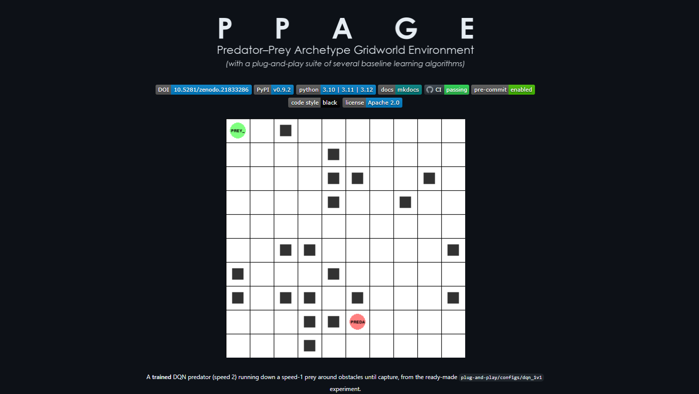

Predator-Prey Archetype Gridworld Environment (PPAGE)

A deterministic, modular, research-grade multi-agent predator–prey environment for studying coordination, pursuit–evasion, and emergent behavior in Multi-Agent Reinforcement Learning. A controlled experimental laboratory with fully inspectable dynamics, pluggable perception and incentives, and reproducibility.
- Became a top contributor to this open-source, PyPI-packaged multi-agent RL testbed (Apache-2.0)
- Built PyTorch MARL baselines from scratch: DQN (Double/Dueling), Actor-Critic, A2C, A3C (async "Hogwild"), and a MixedTrainer for per-team algorithm asymmetry. Designed JAL-GT, a correlated Q-learning baseline solving a per-timestep correlated-equilibrium LP
- Codebase (~81% test coverage) now being scoped for AAMAS/EAAI and JOSS submission
Interested? Find the link to the repo here!